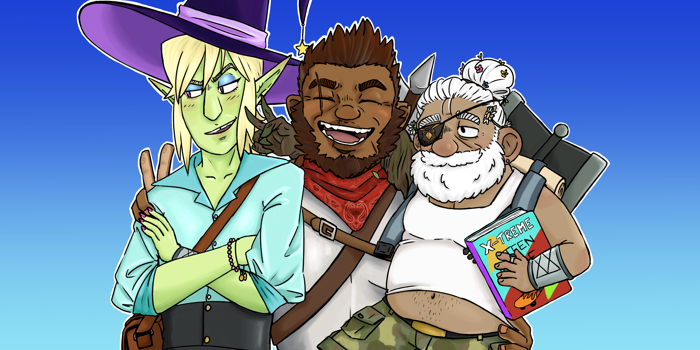
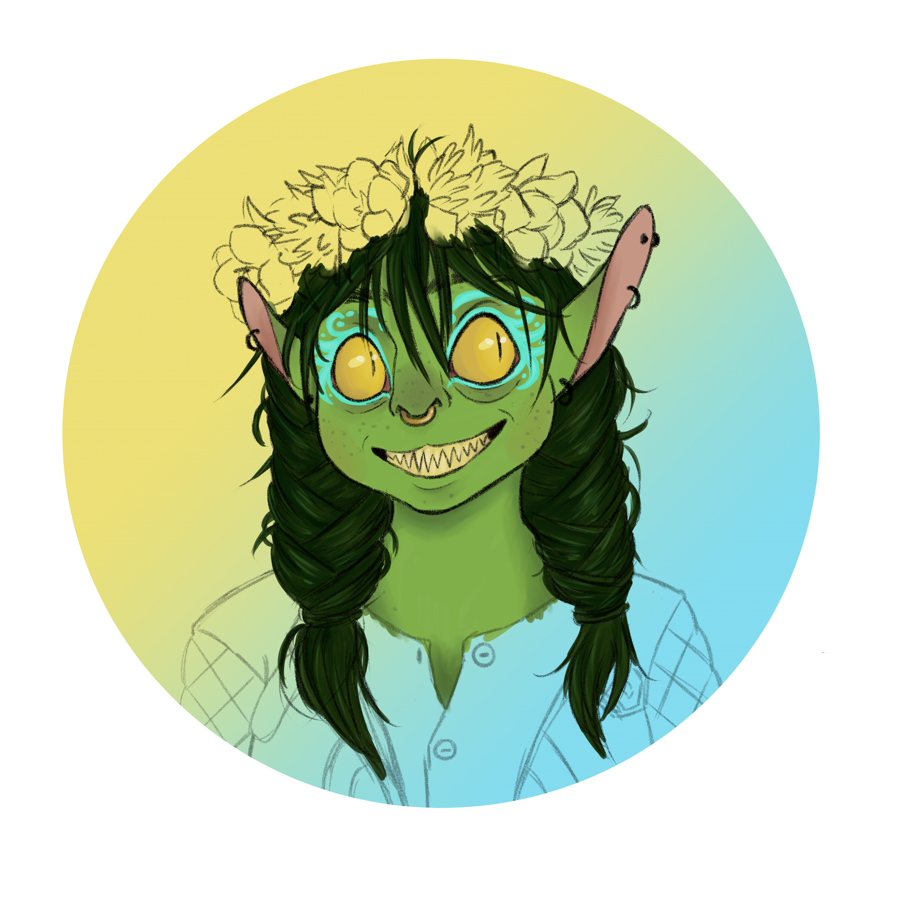
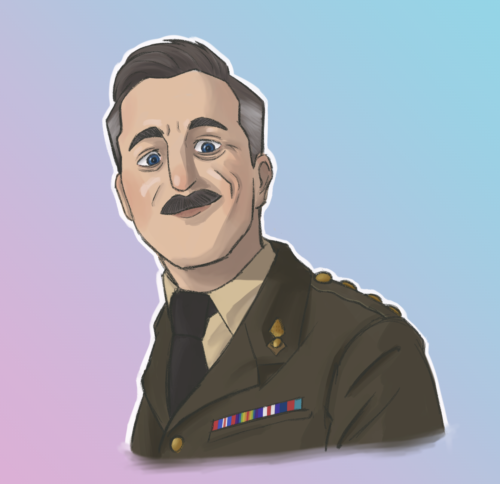
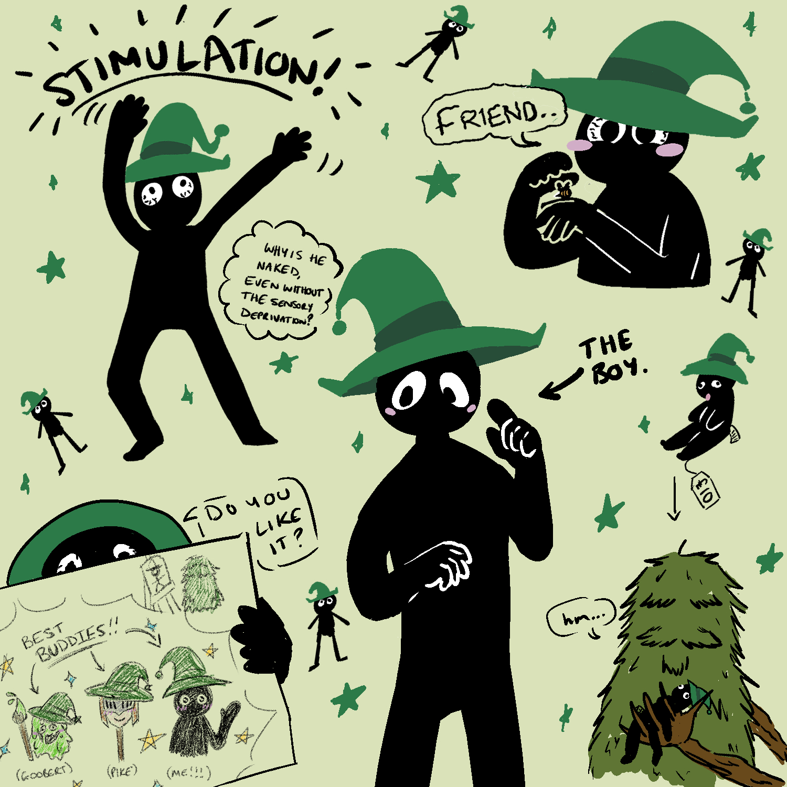
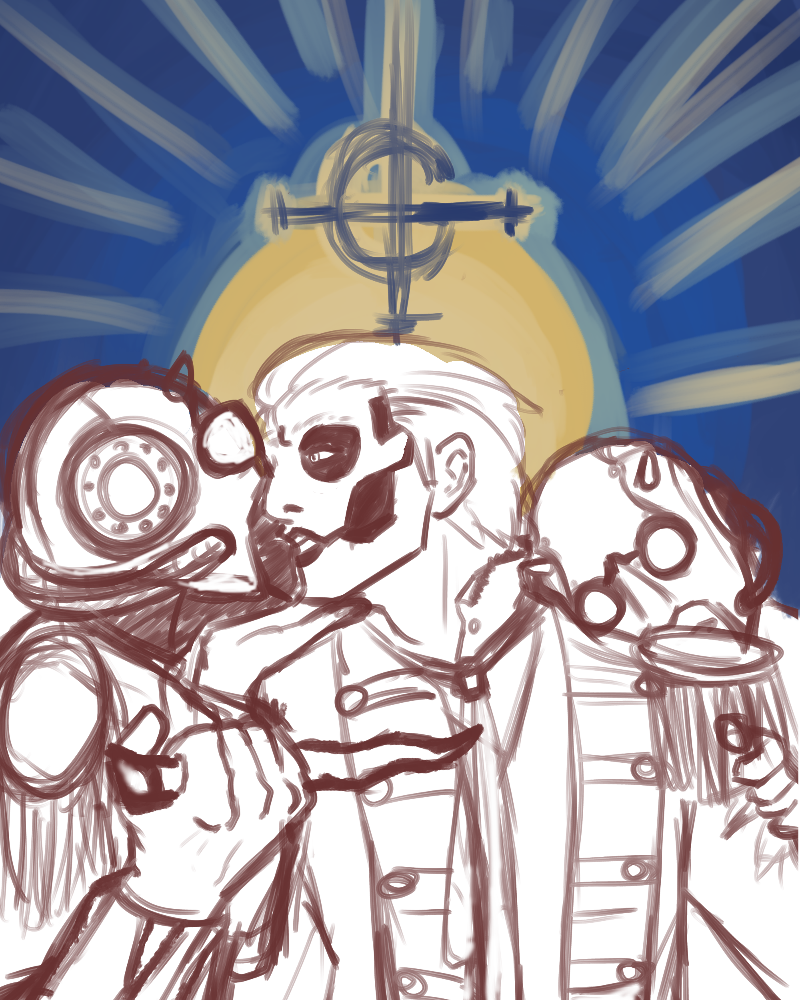

I have been trying to push myself a lot more with more recent examples of my art. I still enjoy messing about with styles and different moods in my work, and the majority of what I draw is still fanart, but I do think I am finally happy with the improvement I am seeing in my artwork.
The Adventure Zone Balance (2020)

Papa Emeritus III (2020)
WIP - Nott The Brave (2020)

Papa Emeritus IV (2020)
The Captain from Ghosts (2020)
Inscryption (2021)
WIP - Papa Emeritus IV and Nameless Ghouls (2022)